A line of symmetry
A line of symmetry is a mirror line that reflects a shape exactly onto itself. A rectangle has two, through the middles of its sides.
Logos, snowflakes, flags and tiles are designed with symmetry because the eye reads it at once. Today we count both kinds of symmetry, and use them to finish a design.
Work down the page at your own pace. Write every answer in your book first, then click to check it.
Read each card, then follow the worked examples one step at a time.
A line of symmetry is a mirror line that reflects a shape exactly onto itself. A rectangle has two, through the middles of its sides.
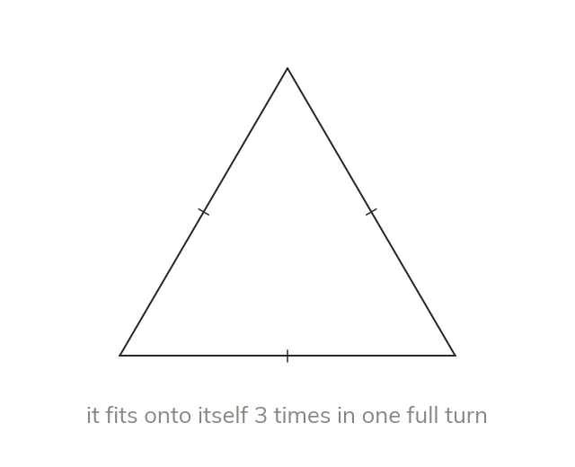
The order is how many times a shape fits onto itself in one full turn. Every shape fits at the full turn, so the order is at least
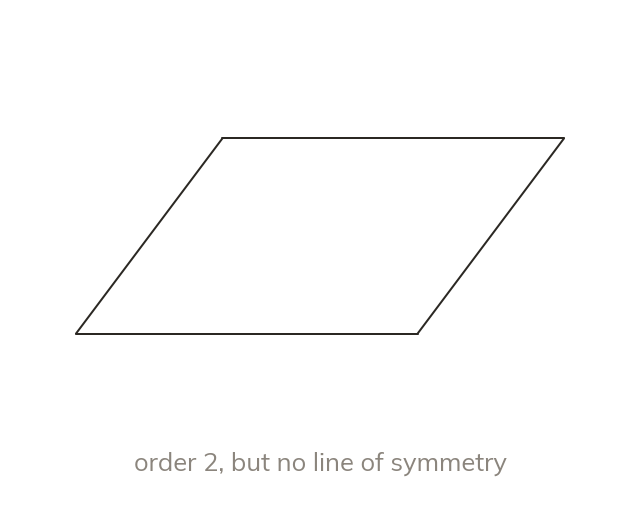
A parallelogram has rotational symmetry of order
It has no line of symmetry. One kind does not bring the other.
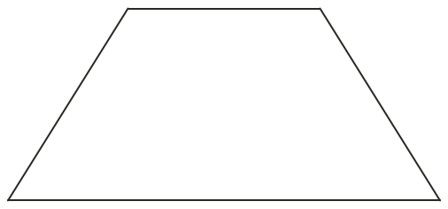
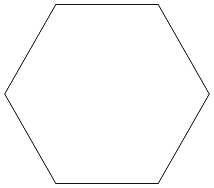
Pick an answer. If it's wrong, the feedback tells you which mistake it was.
Read each card, then follow the worked examples one step at a time.
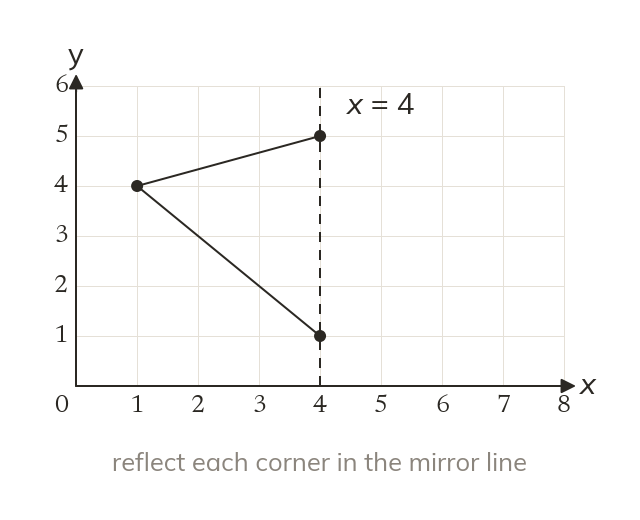
To complete a shape about a line of symmetry, reflect each corner in the line. Each new corner is the same distance from the line, on the other side.
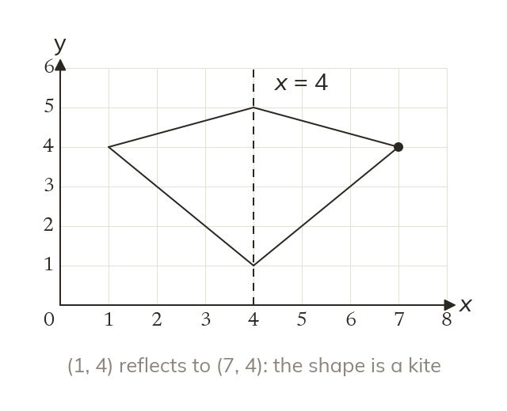
Join the reflected corners in the same order as the originals. Here, the finished shape is a kite.
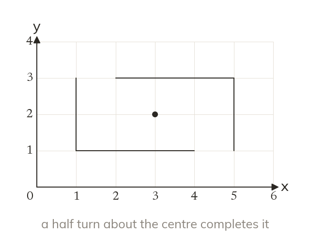
For order turn the given part through a half turn about the centre. For order turn it through each quarter turn.
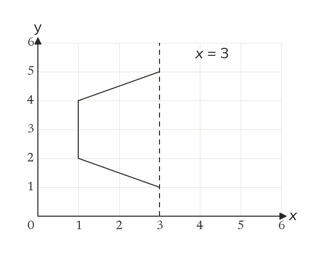
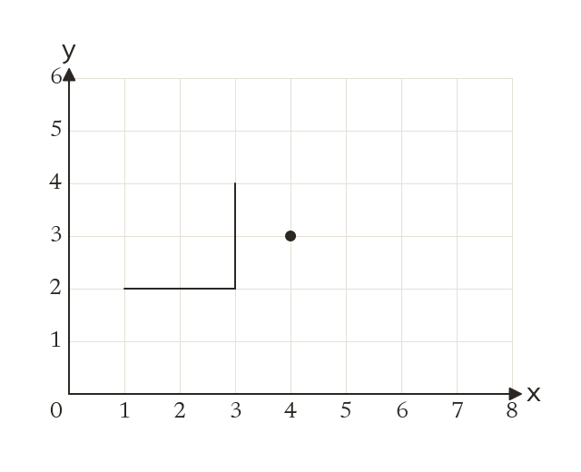
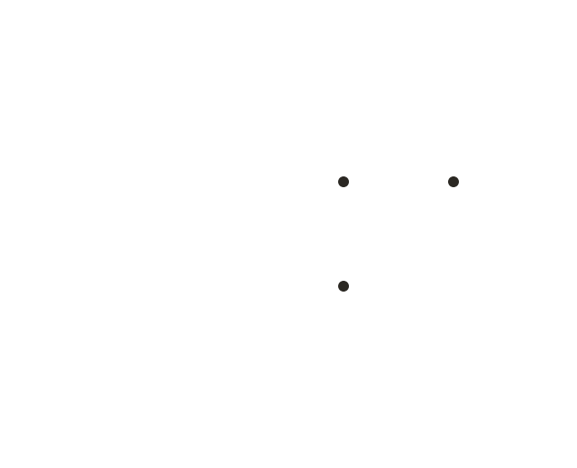
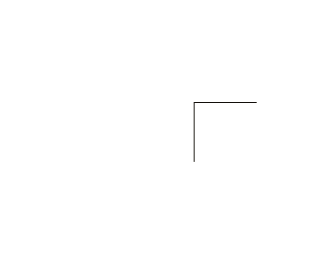
Pick an answer. If it's wrong, the feedback tells you which mistake it was.
Printable worksheet — the questions with room to work.
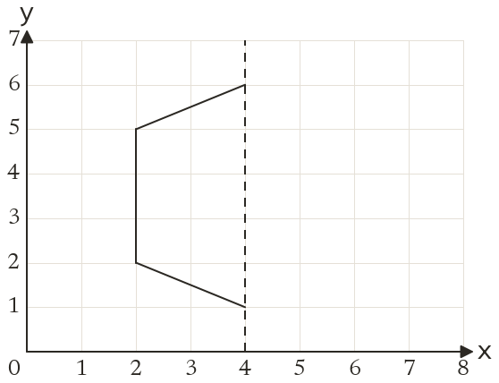
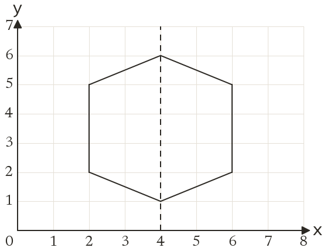
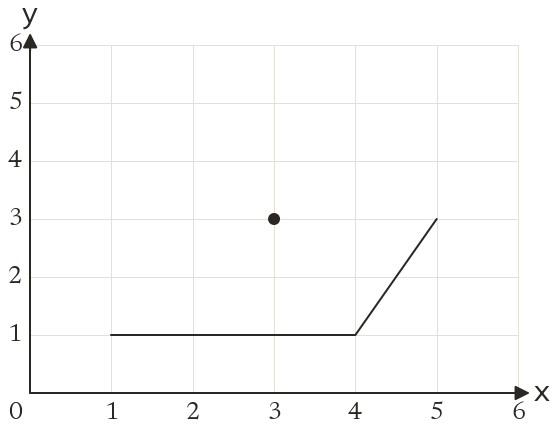
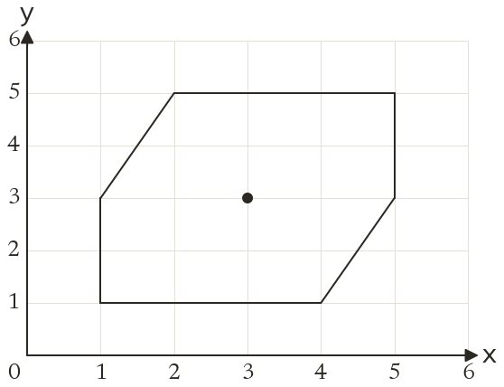
Finished? Next lesson: 10.14.7 Describing and Combining Transformations.
Log in, then search for a code to practise that skill.